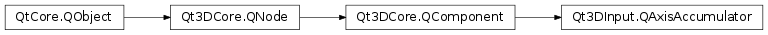

Qt3DInput.QAxisAccumulator¶
Synopsis¶
Functions¶
- def
scale() - def
sourceAxis() - def
sourceAxisType() - def
value() - def
velocity()
Slots¶
- def
setScale(scale) - def
setSourceAxis(sourceAxis) - def
setSourceAxisType(sourceAxisType)
Signals¶
- def
scaleChanged(scale) - def
sourceAxisChanged(sourceAxis) - def
sourceAxisTypeChanged(sourceAxisType) - def
valueChanged(value) - def
velocityChanged(value)
Detailed Description¶
Constructs a new
QAxisAccumulatorinstance withparent.
QAxisAccumulatorprocesses velocity or acceleration data from aQAxis.A
Qt3DInput.QAxisreports the current position of an axis on an input device. When the axis is returned to its neutral position the value of that axis returns to 0. Often, it is required to have the input from an axis control a variable in other ways, for example treating the value from theQt3DInput.QAxisas a velocity (first derivative with respect to time) or as an acceleration (second derivative with respect to time). This can be done with user code or with aQt3DLogic.QFrameActionbut those approached are not ideal as they add more work to the main thread and are inherently imperative. TheQt3DInput.QAxisAccumulatorclass allows for this common task to be performed on the Qt 3D backend and be specified in a declarative manner.
-
class
PySide2.Qt3DInput.Qt3DInput.QAxisAccumulator([parent=nullptr])¶ Parameters: parent – PySide2.Qt3DCore.Qt3DCore::QNodeConstructs a new
QAxisAccumulatorinstance with parentparent.
-
PySide2.Qt3DInput.Qt3DInput.QAxisAccumulator.SourceAxisType¶ Constant Description Qt3DInput.QAxisAccumulator.Velocity Qt3DInput.QAxisAccumulator.Acceleration
-
PySide2.Qt3DInput.Qt3DInput.QAxisAccumulator.scale()¶ Return type: PySide2.QtCore.floatThe amount to scale the axis value by when accumulating. This can be thought of as the maximum velocity or acceleration the axis can control.
Returns the amount the input axis values are scaled by.
See also
PySide2.Qt3DInput.Qt3DInput::QAxisAccumulator.setScale()
-
PySide2.Qt3DInput.Qt3DInput.QAxisAccumulator.scaleChanged(scale)¶ Parameters: scale – PySide2.QtCore.float
-
PySide2.Qt3DInput.Qt3DInput.QAxisAccumulator.setScale(scale)¶ Parameters: scale – PySide2.QtCore.floatSee also
PySide2.Qt3DInput.Qt3DInput::QAxisAccumulator.scale()
-
PySide2.Qt3DInput.Qt3DInput.QAxisAccumulator.setSourceAxis(sourceAxis)¶ Parameters: sourceAxis – PySide2.Qt3DInput.Qt3DInput::QAxisSets the source axis from which the accumulator should receive values from to
sourceAxis. How these values are treated is controlled by thePySide2.Qt3DInput.Qt3DInput::QAxisAccumulator.sourceAxisType()and scale properties.See also
PySide2.Qt3DInput.Qt3DInput::QAxisAccumulator.sourceAxis()
-
PySide2.Qt3DInput.Qt3DInput.QAxisAccumulator.setSourceAxisType(sourceAxisType)¶ Parameters: sourceAxisType – PySide2.Qt3DInput.Qt3DInput::QAxisAccumulator.SourceAxisTypeSets how the accumulator treats the values originating from the
sourceAxisType.See also
PySide2.Qt3DInput.Qt3DInput::QAxisAccumulator.sourceAxisType()
-
PySide2.Qt3DInput.Qt3DInput.QAxisAccumulator.sourceAxis()¶ Return type: PySide2.Qt3DInput.Qt3DInput::QAxisReturns
QAxisfor which the accumulator should integrate axis values.See also
PySide2.Qt3DInput.Qt3DInput::QAxisAccumulator.setSourceAxis()
-
PySide2.Qt3DInput.Qt3DInput.QAxisAccumulator.sourceAxisChanged(sourceAxis)¶ Parameters: sourceAxis – PySide2.Qt3DInput.Qt3DInput::QAxis
-
PySide2.Qt3DInput.Qt3DInput.QAxisAccumulator.sourceAxisType()¶ Return type: PySide2.Qt3DInput.Qt3DInput::QAxisAccumulator.SourceAxisTypeReturns how the accumulator treats the value of the
PySide2.Qt3DInput.Qt3DInput::QAxisAccumulator.sourceAxis().See also
PySide2.Qt3DInput.Qt3DInput::QAxisAccumulator.setSourceAxisType()
-
PySide2.Qt3DInput.Qt3DInput.QAxisAccumulator.sourceAxisTypeChanged(sourceAxisType)¶ Parameters: sourceAxisType – PySide2.Qt3DInput.Qt3DInput::QAxisAccumulator.SourceAxisType
-
PySide2.Qt3DInput.Qt3DInput.QAxisAccumulator.value()¶ Return type: PySide2.QtCore.float
-
PySide2.Qt3DInput.Qt3DInput.QAxisAccumulator.valueChanged(value)¶ Parameters: value – PySide2.QtCore.float
-
PySide2.Qt3DInput.Qt3DInput.QAxisAccumulator.velocity()¶ Return type: PySide2.QtCore.floatReturns the velocity. If the
PySide2.Qt3DInput.Qt3DInput::QAxisAccumulator.sourceAxisType()is set to Velocity this is simply the value of the source axis multiplied by the scale. If thePySide2.Qt3DInput.Qt3DInput::QAxisAccumulator.sourceAxisType()is set to Acceleration, the velocity is integrated using the source axis’ value as an acceleration.
-
PySide2.Qt3DInput.Qt3DInput.QAxisAccumulator.velocityChanged(value)¶ Parameters: value – PySide2.QtCore.float
© 2018 The Qt Company Ltd. Documentation contributions included herein are the copyrights of their respective owners. The documentation provided herein is licensed under the terms of the GNU Free Documentation License version 1.3 as published by the Free Software Foundation. Qt and respective logos are trademarks of The Qt Company Ltd. in Finland and/or other countries worldwide. All other trademarks are property of their respective owners.